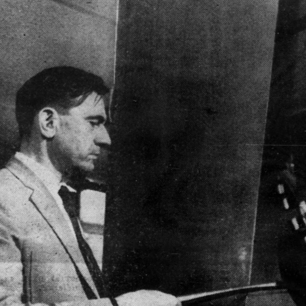
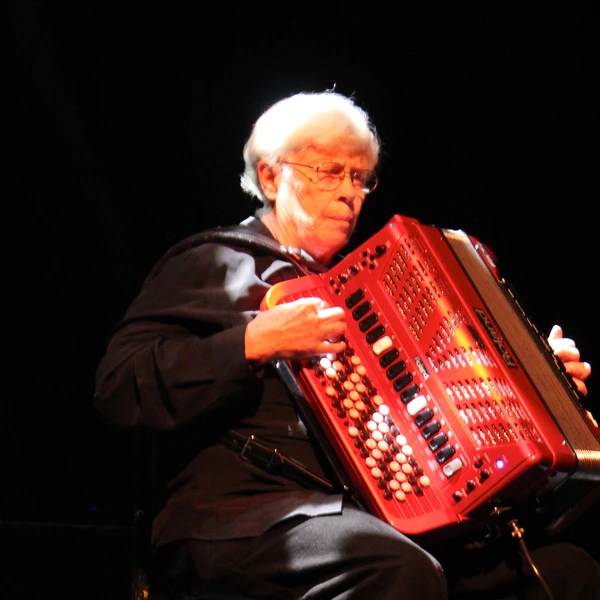
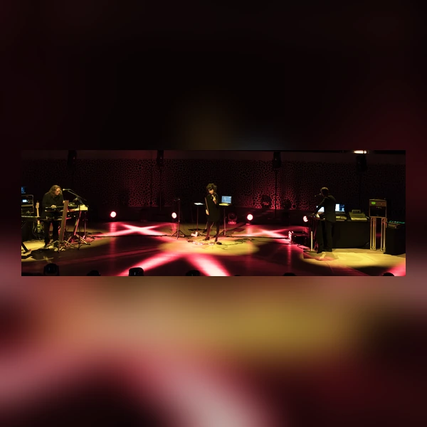
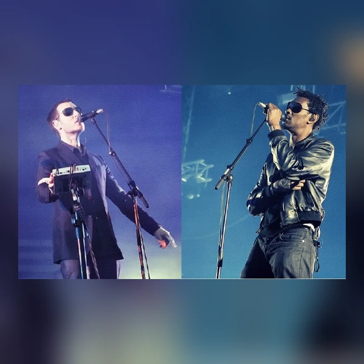
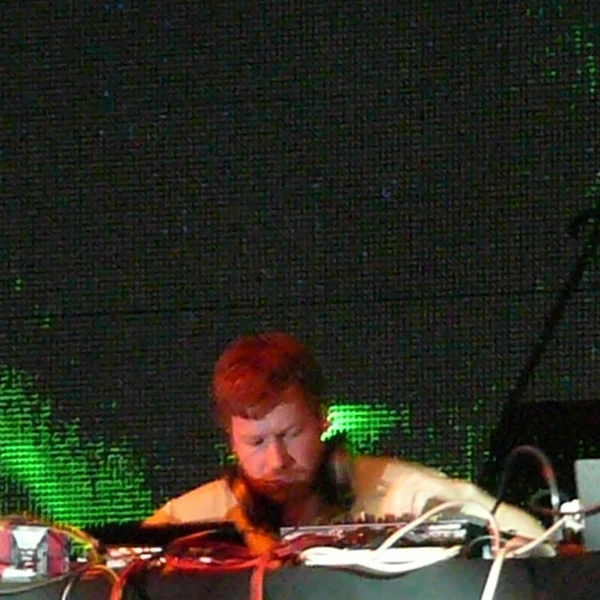
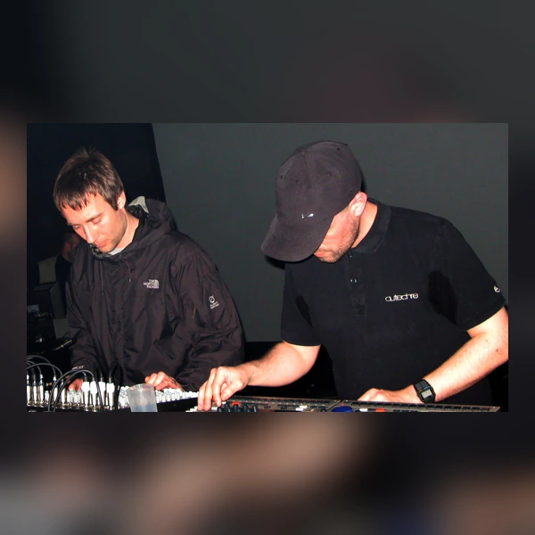

Downtempo is a loose category of electronic music that generally favours slower rhythms and detailed sound over the continuous drive of a dance floor. It includes music built around subdued beats, but the label is also used for more atmospheric material that may have little percussion at all. Rather than describing one particular sound, Downtempo brings together several related approaches to electronic production and listening. Some styles draw heavily on the rhythms of Hip Hop and Dub, while others are closer to Ambient music and place more emphasis on gradual changes in texture. These traditions did not all grow out of the same scene, and not everything described as Downtempo is especially slow. What usually connects them is that the music leaves more room for listening without asking people to keep dancing. The distinction is practical rather than absolute. Plenty of Downtempo can be played in clubs, and plenty of faster electronic music rewards close attention. The label is useful, provided nobody mistakes it for a strictly defined musical family.
Downtempo is a fairly literal name. It refers to a slower pace, usually in comparison with the faster rhythms associated with club music. The term became common in electronic music during the 1990s, as record shops, DJs and journalists tried to organise styles that did not fit neatly into the main dance categories. Chill-out and downbeat were often used for overlapping music, but these labels were never governed by precise speed limits. A track can feel unhurried without having an unusually low number of beats per minute. Ambient is another name frequently placed nearby, although it has its own history and does not require a regular beat in the first place. Trip Hop developed as a separate label for certain beat-based styles and was not universally welcomed by the musicians it described. Taken together, the terminology says as much about how music was marketed and listened to as it does about the music itself. Apparently, even relaxing requires a reasonably complicated filing system.
The music grouped under Downtempo developed through several connected but distinct histories. Experiments with electronic sound and tape recording during the late 1960s and 1970s helped establish music that could focus on texture rather than conventional songwriting. Ambient developed more clearly as a recognised approach during the 1970s, while Dub demonstrated how a mixing desk could transform an existing rhythm into something quite different. By the late 1980s, clubs were creating spaces where people could take a break from faster dance music without leaving the event. Those rooms encouraged DJs to play slower and more atmospheric records alongside material borrowed from other genres. During the 1990s, producers combined influences from Hip Hop, Soul and Dub into beat-based styles often associated with Britain's Bristol scene. These developments contributed to the growing use of Downtempo as a broad category. As home production and digital distribution expanded, the music increasingly circulated beyond clubs through independent releases and online listening. It never had one founding moment, which is worth remembering when a label covers so many different musical paths.
Downtempo is often built around a beat that gives the music a sense of movement without demanding much attention from the listener. Drums may be programmed or sampled, with a bassline and a few recurring musical phrases carrying the arrangement. Producers frequently leave space between these elements, allowing reverberation or small changes in the sound to become more noticeable. In beat-based styles, the rhythm may draw on Hip Hop, with a less rigid feel than a typical club track. Vocals might appear briefly, carry the main melody or be absent altogether. The quieter end of the category overlaps with Ambient, where long tones and slowly changing textures can matter more than percussion. That variety makes it difficult to identify Downtempo by speed alone. The arrangement and the role of the rhythm often tell you more. Good production in this area does not necessarily involve adding more sounds. It often involves deciding which ones can be left out, and giving the remaining details enough space to do something interesting.






Downtempo gained a place in electronic music culture partly because clubs and raves needed somewhere other than the main dance floor. Chill-out rooms allowed people to talk or simply listen without leaving the wider event, and they helped establish slower electronic music as more than an afterthought. The same sounds gradually became common in homes and other settings, where they were used for relaxation or concentration. That flexibility brought a larger audience, but it also changed how the music was presented. Some Ambient and Downtempo styles were promoted as more sophisticated than music made for dancing, a distinction that could carry assumptions about class and cultural taste. Meanwhile, the influence of Black musical traditions such as Dub and Hip Hop was not always given equal attention. As the category spread into advertising and lifestyle marketing, some of its connection with club culture became easier to overlook. Music that once offered a break from commercial noise could now be used to help sell things. None of that cancels the music's value, but it does show how a listening style can acquire a very different social identity once it moves beyond the communities that developed it.